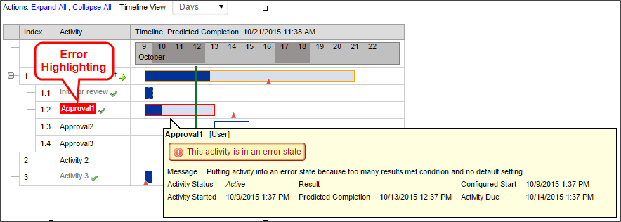
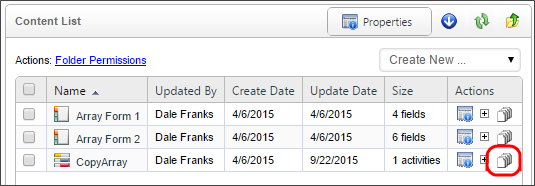
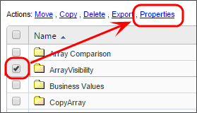
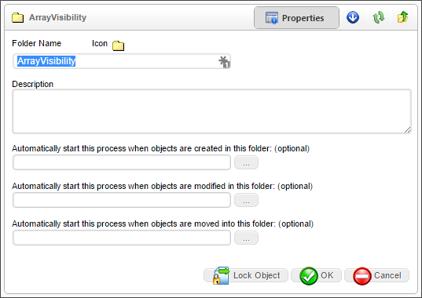
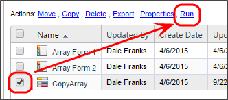

|
|
Lesson Contents | In this Lesson, you will learn how to administer Process Timelines and Process Timeline instances. |
When a Process Timeline process is started, a Process Timeline instance is created. This is what is routed to the participants of the Process Timeline. The Process Timeline instance contains the routing slip, the Process Timeline objects (documents, Forms, etc.), optional references, and administrative controls. The Process Timeline instance can be viewed by authorized users for running and completed Process Timelines.
Authorized users have access to the routing slip in the Process Timeline instance by clicking on the Timeline Status Tab. This tab displays a routing slip that shows the progress of the route. It displays all users that are participating in this Process Timeline and how far it has progressed in the routing process, including all iterations of an activity.

When you open a Timeline definition, the folder list on the left side of the content list screen will automatically expand the Timeline treeview to display the Active Timelines and Completed Timelines branches. Clicking on one of the branches will show all instances of the running or completed timelines, respectively, on the right side of the Content List. Clicking on any running or completed timeline instance will open the instance in the Timeline Status view.

Only authorized users will see this button displayed, which opens the timeline administration view. The user must have Modify permission for the running Process Timeline or have Modify Children permission for the Process Timeline Definition. The Administration button in the Process Timeline instance allows users to modify the running Process Timeline. From this screen, authorized users can change the running Process Timeline by adding users to an activity, removing them from an activity, or jumping to a new activity.

The Process Timeline administration page displays information about the state of the running Process Timeline instance. It can tell you when tasks are expected to complete, and indicates if that means they will be late. It can compare the configured run time of an activity to its actual and predicted run times. To view analyses of average Process Timeline performance, go to the Analyze Timeline page on the Process Timeline definition.
The triangles represent due dates. They can be dragged along the Process Timeline to change the configured due date for a single Process Timeline instance.
The green bar indicates the current date and time, juxtaposed onto the configured dates and times for the Process Timeline.
Green arrows will appear to the left of activities that are currently running.
A checkbox next to an Activity name indicates that that activity has been completed.

If a Process Timeline is in an error state, Process Director will display the activity in which the error occurred highlighted in red. Rolling your mouse over the activity will also display an error message.

You can access the properties for a timeline activity displayed in the Administration/Timeline screen by right-clicking on the activity, and selecting "Properties" from the pop-up menu.

In the Activity Properties screen, you can access the full range of activity and user properties by checking the box next to the activity's user name in the Participants column of the Activity routing slip.

With the user check box checked, you now have access to the full range of Timeline and User Actions available for the activity, displayed in a list of links marked "Actions:". The full list of actions are described in the table below:
|
OPTION |
RESULT |
|---|---|
|
Cancel Activity |
Cancels this activity in the timeline.  When a Parent activity is administratively canceled, the system will ripple the user and cancellation comments to all the child activities that are being canceled because the parent is canceled. When a Parent activity is administratively canceled, the system will ripple the user and cancellation comments to all the child activities that are being canceled because the parent is canceled. |
|
Restart Activity |
Restarts this activity in the Timeline. User, Wait, Custom Task, or Script Activities may all be restarted. |
|
Cancel Timeline |
Cancels the entire running Timeline instance. |
|
Add User(s) |
Adds additional users to the Workflow step. |
|
Add Me to This Task |
Adds you to the Workflow step as a participant. |
|
Cancel User |
Cancels the user's participation in the task. |
|
Complete User Task |
Sets the user's task as complete. |
|
Remove User |
Remove the user from the task. |
|
Restart User |
Restart this user task. |
|
Resend Email |
Resend the task notification email to the user. |
|
Reassign User |
Assign a different user to the task. |
| Open My Task | If you are the user to whom the task is assigned, this link will open the Form that is associated with the Timeline. The Form will open in the context of the user task, enabling you to complete the task. |
When cancelling a Parent activity in a Process Timeline, all child activities will also be canceled.
In addition to viewing an activity’s properties, you also have the option to restart a task, or rollback to a task.

Restart This Activity: You can choose an activity that has already completed, and restart it. This will only restart that activity, and will not restart any subsequent activities in the Process Timeline. Once the restarted activity completes, no further action is taken. If you are in a later activity and you restart, the later activity will still run normally.
Rollback to this activity: This option only appears when you select an activity that is on a critical path. If you rollback to an earlier activity in the same critical path, it will cancel the current activity, restart the selected activity, and place all subsequent activities in the critical path into a reset state, so that they can run again. If you rollback to an activity in a different critical path, it will not cancel the current activity, it will only restart the critical path for the activity you selected. In that case, both the rollback activity and the current activity will run simultaneously. Only if a previous activity is in the same critical path as the current activity will the current activity be canceled upon rollback.
When viewing a Process Timeline definition, there will be an option to analyze the Process Timeline in the object menu at the upper right portion of the Timeline Definition screen. This analysis view will display data about average predicted run times and start and end dates compared to the configured run times and start and end dates.

A Timeline Analysis page will display the tasks in the Process Timeline definition, and will overlay average times and dates on the times and dates configured in the Process Timeline definition.

Triangles represent start and end dates for each process. If a triangle is red, it means that the start or end date for an activity is happening after it was configured to. It does not mean that the activity is taking longer than it was configured to. If a triangle is blue, it means that the start or end date is happening approximately when it was configured to happen, and if it is green, it means that it is happening before it was configured to happen.
A line between two triangles indicates the expected (weighted average historical) duration of the activity, while its color denotes whether it is generally finishing late, early, or as planned. A red line means that the activity is finishing later than planned; a blue line means that it is finishing as planned, and a green line means that it is finishing earlier than planned. A percentage number on an activity bar indicates the percentage of time longer that the activity takes to run than was planned. For example, a number of 80% indicates that the activity takes 80% longer to run than planned, and a number of -24% indicates that the activity completes in a time 24% shorter than planned.
Additional options are available by right-clicking the individual bars on the timeline to bring up a pop-up menu.

Selecting the Properties menu item will display the normal Properties screen for this timeline activity.
Selecting the Show Dependencies menu item will display the color-coded view of the timeline activity's predecessors and successors.

The menu item will change slightly to analyze either tasks or users depending upon the activity type. For example, a user activity will display a user analysis option, while a parent activity will display a task analysis option. In either case, selecting the menu item will display an analysis screen that provides a snapshot of how the selected activity is performing.

The Process Timeline Items page is what is presented to users that are participating in a Process Timeline activity. This page displays all of the objects being routed in this Process Timeline (e.g. documents, Forms, etc.). A Process Timeline instance can contain multiple objects of any type. If the Form has an attach button, users in that activity will be able to add objects to the Process Timeline instance. Each new object added is added to the Process Timeline Items page. If a user has Delete permission to the running Process Timeline they will be able to remove objects from the Process Timeline instance.
To return from the Analysis view to the Process Timeline Definition view, click the Process Timeline Definition menu option.

Process Timeline Definitions are stored in the content list just like any other object in the database. When a Process Timeline is started, an entry will be created under the Process Timeline Definition in the Content List as a child object. It will remain there even after the Process Timeline has completed. To view the running and completed Process Timelines for a Process Timeline Definition, users can click on the view children ( ) icon next to the Process Timeline Definition name in the content list.
) icon next to the Process Timeline Definition name in the content list.

If users have View Children permission to the Process Timeline Definition, they will automatically be given View permission to any running and completed Process Timelines for that definition. The running and completed Process Timelines are displayed in the content list showing status, what activity is running and the user that initiated the Process Timeline. Users can view the Process Timeline instance for any of the running or completed Process Timelines by clicking on the name or the  icon in the content list. To view the objects that are part of a Process Timeline instance, click on the icon for the appropriate Process Timeline name.
icon in the content list. To view the objects that are part of a Process Timeline instance, click on the icon for the appropriate Process Timeline name.

Running and completed Process Timelines can also be made available to users through a Knowledge View. For example, if users have a need to see only certain types of running Process Timelines, a Knowledge View filter can show a list of the Process Timelines making the actual location of them in the content list transparent.
A running Process Timeline can allow users to add new objects (e.g. documents, Forms). If a user has an attach button on a Form they will be able to add new objects to the running Process Timeline. When a new document is added under the Process Timeline instance it will only be contained under the Process Timeline. The document will not exist anywhere else in the Content List.
When a reference (e.g. shortcut) to an existing object in the database is added, only a reference to the object will be created in the Process Timeline. A reference, or shortcut, is a symbolic link to the original object. Any changes made to the reference will also update the object it is pointing to, except in the case of a Form. If a reference to a Form is added to the running Process Timeline, an instance of the Form will be created and placed under the Process Timeline Items button.
Process Director Process Timeline engine supports the ability to automatically start Process Timelines for certain document events within a folder. Automatic Process Timeline Definitions can be specified for any folder, on the folder's properties page. To see the folder properties, select the check box for the folder, then click the Properties link.

A Process Timeline Definition can be associated with one of the following document actions:
If one of these conditions is met, the appropriate Process Timeline will automatically be started against that document.

A Process Timeline can be started by selecting the check box next to a Process Timeline definition in the Content List and choosing the Run link. This will start a new instance of the Process Timeline immediately.

Changes to the Process Timeline Definition will affect all running Process Timelines. Please see the section on Changing Existing Processes for more detailed information.
Task lists are fundamental to Process Timeline management systems. The Process Director Process Timeline engine supports an integrated Task List that provides each user with a list of their assigned tasks, according to priority and due date. As a user completes an assigned task, the item is automatically removed from their Task List.
A running Process Timeline will temporarily override the permissions for any object (document, Form, etc.) contained within it, giving the user the necessary access to perform the requested task. When users are assigned to a Process Timeline task, they will automatically be given Modify permission to the objects until their task is completed. This prevents the object permissions from effecting running Process Timelines.